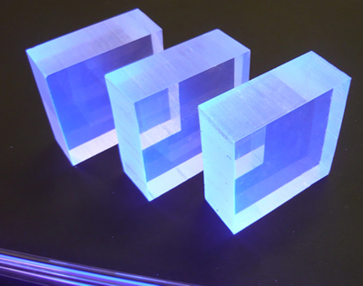
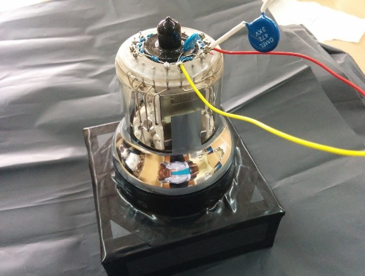

How to measure Cosmic Radiation Flux?
Several methods to detect cosmic radiation are used in different experiments around the world. One of the common and reliable methods is detecting the interaction of the cosmic particles with a scintillator using a photomultiplier tube.
A scintillator is any material which exhibits scintillation – emits light – on interaction with ionizing radiation such as cosmic rays. The material absorbs a part of the energy when struck by any ionizing radiation. In our experiment, a plastic scintillator crystal manufactured by Eljen Technology has been used to detect cosmic radiation.
The light emitted by a scintillator needs extremely sensitive devices for detection. One such device is a photomultiplier tube (PMT), which are vacuum tubes with the ability to detect electromagnetic radiation in infrared, ultraviolet, and visible range. PMTs contain a highly sensitive photodiode that detects light and produces electrons. These electrons pass through the high voltage dynodes resulting in several stages of multiplication. Hamamatsu R6233 has been used for this purpose in the experiment.
Collection of accurate data requires distinguishing between cosmic radiation and other sources of radiation. Inaccurate data due to electronic noise must also be avoided. In our experiment, we have used coincidence method with three detectors to ensure that data collected represents the true flux of cosmic rays. The detectors have been stacked vertically such that only the radiation that is vertical to the earth will pass through all the three detectors. This will ensure that the detected radiation is due to cosmic rays.
The data collected is processed by the data acquisition system on board the payload. It is then stored on board as well as transmitted to the ground station for further analysis.